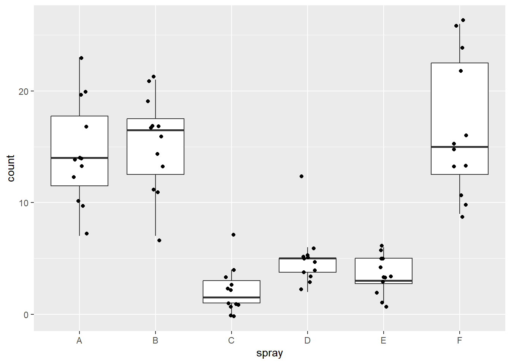
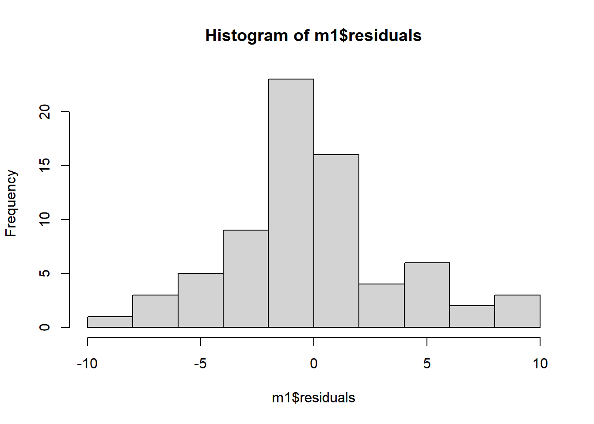
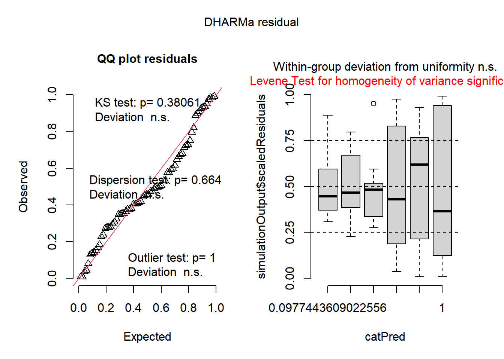
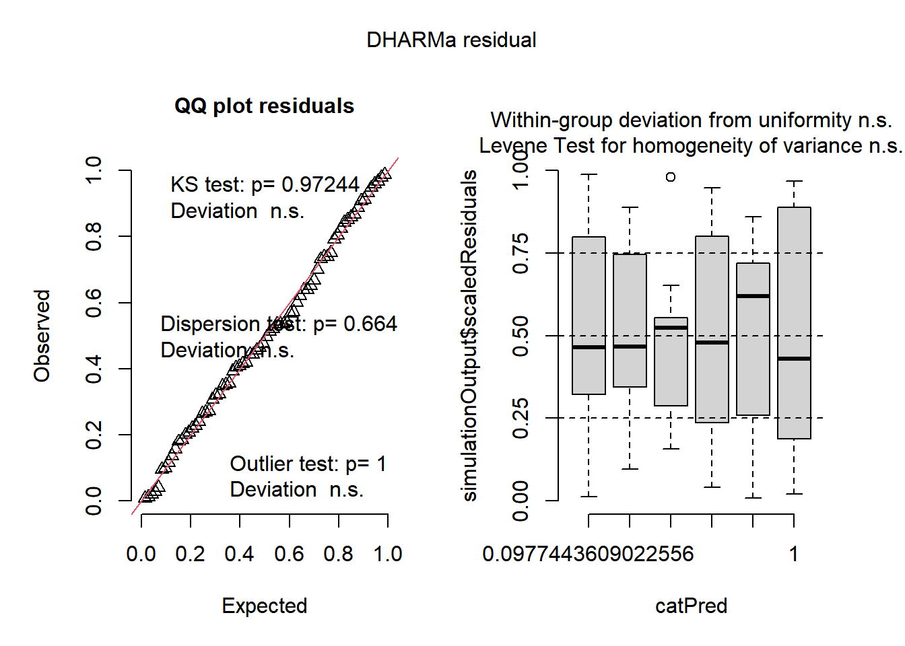
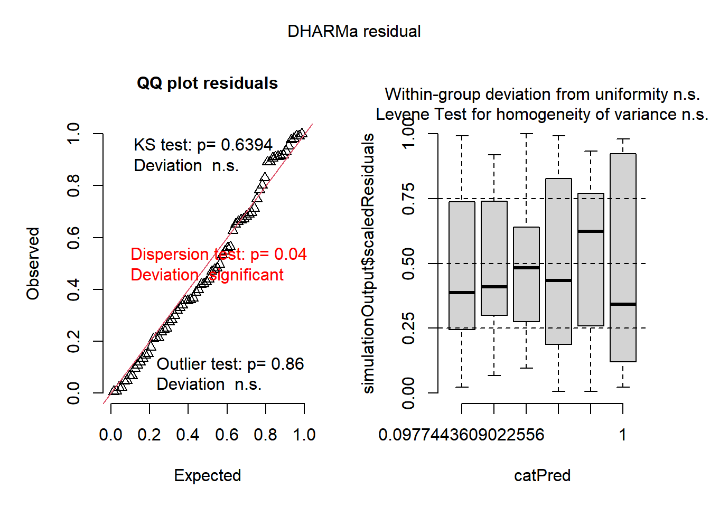

Em dados de contagem (ex: número de insetos), frequentemente a premissa de normalidade não é atendida. Nesses casos, pode-se tentar a transformação de dados, utilizar testes não paramétricos, ou usar Modelos Lineares Generalizados (GLM) com distribuição de Poisson ou Binomial Negativa.
Vamos iniciar nossa exploração carregando o conjunto de dados nativo do R chamado InsectSprays. Em seguida, faremos um gráfico de boxplot sobreposto com os pontos dispersos (geom_jitter) para entender a distribuição da contagem de insetos por tipo de spray aplicado.
library(tidyverse)
── Attaching core tidyverse packages ──────────────────────── tidyverse 2.0.0 ──
✔ dplyr 1.1.4 ✔ readr 2.1.5
✔ forcats 1.0.0 ✔ stringr 1.5.1
✔ ggplot2 4.0.2 ✔ tibble 3.3.0
✔ lubridate 1.9.4 ✔ tidyr 1.3.1
✔ purrr 1.2.1
── Conflicts ────────────────────────────────────────── tidyverse_conflicts() ──
✖ dplyr::filter() masks stats::filter()
✖ dplyr::lag() masks stats::lag()
ℹ Use the conflicted package (<http://conflicted.r-lib.org/>) to force all conflicts to become errors
library(ggplot2)# Atribuir o dataframe nativo "InsectSprays" ao objeto "insetos"insetos <- InsectSprays insetos |>ggplot(aes(spray, count)) +geom_boxplot(outlier.colour =NA) +geom_jitter(width =0.1)

Ajuste de Modelo Linear Clássico (LM) e Verificação de Premissas
Inicialmente, vamos tentar ajustar um modelo linear clássico (ANOVA de um fator via função lm). Após o ajuste do modelo (m1), é essencial checarmos as premissas de normalidade (via Shapiro-Wilk) e homocedasticidade (via Bartlett).
Atenção: Em modelos de ANOVA, a falta de variância homogênea (homocedasticidade) costuma ser um problema mais grave do que a falta de normalidade dos resíduos.
O pacote performance oferece funções muito práticas para checar essas premissas rapidamente (check_normality e check_heteroscedasticity).
m1 <-lm(count~spray, data = insetos) summary(m1)
Call:
lm(formula = count ~ spray, data = insetos)
Residuals:
Min 1Q Median 3Q Max
-8.333 -1.958 -0.500 1.667 9.333
Coefficients:
Estimate Std. Error t value Pr(>|t|)
(Intercept) 14.5000 1.1322 12.807 < 2e-16 ***
sprayB 0.8333 1.6011 0.520 0.604
sprayC -12.4167 1.6011 -7.755 7.27e-11 ***
sprayD -9.5833 1.6011 -5.985 9.82e-08 ***
sprayE -11.0000 1.6011 -6.870 2.75e-09 ***
sprayF 2.1667 1.6011 1.353 0.181
---
Signif. codes: 0 '***' 0.001 '**' 0.01 '*' 0.05 '.' 0.1 ' ' 1
Residual standard error: 3.922 on 66 degrees of freedom
Multiple R-squared: 0.7244, Adjusted R-squared: 0.7036
F-statistic: 34.7 on 5 and 66 DF, p-value: < 2.2e-16
anova(m1)
Analysis of Variance Table
Response: count
Df Sum Sq Mean Sq F value Pr(>F)
spray 5 2668.8 533.77 34.702 < 2.2e-16 ***
Residuals 66 1015.2 15.38
---
Signif. codes: 0 '***' 0.001 '**' 0.01 '*' 0.05 '.' 0.1 ' ' 1
# Testes Clássicos de Premissashist(m1$residuals)

shapiro.test(m1$residuals)
Shapiro-Wilk normality test
data: m1$residuals
W = 0.96006, p-value = 0.02226
bartlett.test(count~spray, data=insetos)
Bartlett test of homogeneity of variances
data: count by spray
Bartlett's K-squared = 25.96, df = 5, p-value = 9.085e-05
# Checagem via pacote performancelibrary(performance)check_normality(m1)
Warning: Non-normality of residuals detected (p = 0.022).
Teste de Kruskal-Wallis e Diagnóstico Visual (DHARMa)
O Teste de Kruskal-Wallis é uma alternativa não paramétrica à ANOVA de um fator. É utilizado quando os dados não atendem aos pressupostos de normalidade ou homocedasticidade.
Além disso, podemos usar o pacote DHARMa que simula resíduos para nos dar um diagnóstico visual super robusto sobre a adequação do nosso modelo.
kruskal.test(count~spray, data=insetos)
Kruskal-Wallis rank sum test
data: count by spray
Kruskal-Wallis chi-squared = 54.691, df = 5, p-value = 1.511e-10
library(qqplotr)
Anexando pacote: 'qqplotr'
Os seguintes objetos são mascarados por 'package:ggplot2':
stat_qq_line, StatQqLine
library(see)library(DHARMa)
This is DHARMa 0.4.7. For overview type '?DHARMa'. For recent changes, type news(package = 'DHARMa')
plot(simulateResiduals(m1))

Alternativa 1: Transformação de Dados
Quando a normalidade ou a homocedasticidade falham, uma das abordagens tradicionais é transformar a variável resposta. Para dados de contagem, a transformação por raiz quadrada (sqrt()) é comum. Vamos criar o modelo m2 usando os dados transformados e realizar as verificações novamente.
Após a modelagem, usamos o pacote emmeans para extrair as médias estimadas e o pacote multcomp para gerar as letras de agrupamento estatístico das médias (função cld). Note que é possível pedir as médias na escala original (transformada de volta) usando type = "response".
# Modelo linear com dados transformados (raiz quadrada)m2 <-lm(sqrt(count)~spray, data=insetos)anova(m2)
Analysis of Variance Table
Response: sqrt(count)
Df Sum Sq Mean Sq F value Pr(>F)
spray 5 88.438 17.6876 44.799 < 2.2e-16 ***
Residuals 66 26.058 0.3948
---
Signif. codes: 0 '***' 0.001 '**' 0.01 '*' 0.05 '.' 0.1 ' ' 1
shapiro.test(m2$residuals)
Shapiro-Wilk normality test
data: m2$residuals
W = 0.98721, p-value = 0.6814
bartlett.test(sqrt(count)~spray, data=insetos)
Bartlett test of homogeneity of variances
data: sqrt(count) by spray
Bartlett's K-squared = 3.7525, df = 5, p-value = 0.5856
check_normality(m2)
OK: residuals appear as normally distributed (p = 0.681).
check_heteroscedasticity(m2)
OK: Error variance appears to be homoscedastic (p = 0.854).
plot(simulateResiduals(m2))

library(emmeans)
Welcome to emmeans.
Caution: You lose important information if you filter this package's results.
See '? untidy'
library(multcomp)
Carregando pacotes exigidos: mvtnorm
Carregando pacotes exigidos: survival
Carregando pacotes exigidos: TH.data
Carregando pacotes exigidos: MASS
Anexando pacote: 'MASS'
O seguinte objeto é mascarado por 'package:dplyr':
select
Anexando pacote: 'TH.data'
O seguinte objeto é mascarado por 'package:MASS':
geyser
# Médias na escala transformadamedias2 <-emmeans(m2, ~spray)medias2
spray emmean SE df lower.CL upper.CL
A 3.76 0.181 66 3.399 4.12
B 3.88 0.181 66 3.514 4.24
C 1.24 0.181 66 0.883 1.61
D 2.16 0.181 66 1.802 2.53
E 1.81 0.181 66 1.447 2.17
F 4.02 0.181 66 3.656 4.38
Results are given on the sqrt (not the response) scale.
Confidence level used: 0.95
cld(medias2, Letters= letters)
spray emmean SE df lower.CL upper.CL .group
C 1.24 0.181 66 0.883 1.61 a
E 1.81 0.181 66 1.447 2.17 ab
D 2.16 0.181 66 1.802 2.53 b
A 3.76 0.181 66 3.399 4.12 c
B 3.88 0.181 66 3.514 4.24 c
F 4.02 0.181 66 3.656 4.38 c
Results are given on the sqrt (not the response) scale.
Confidence level used: 0.95
Note: contrasts are still on the sqrt scale. Consider using
regrid() if you want contrasts of back-transformed estimates.
P value adjustment: tukey method for comparing a family of 6 estimates
significance level used: alpha = 0.05
NOTE: If two or more means share the same grouping symbol,
then we cannot show them to be different.
But we also did not show them to be the same.
# Médias convertidas para a escala original de respostamedias3 <-emmeans(m2, ~spray, type ="response")medias3
spray response SE df lower.CL upper.CL
A 14.14 1.360 66 11.550 17.00
B 15.03 1.410 66 12.352 17.97
C 1.55 0.452 66 0.779 2.58
D 4.68 0.785 66 3.248 6.38
E 3.27 0.656 66 2.095 4.72
F 16.15 1.460 66 13.370 19.19
Confidence level used: 0.95
Intervals are back-transformed from the sqrt scale
cld(medias3, Letters= letters)
spray response SE df lower.CL upper.CL .group
C 1.55 0.452 66 0.779 2.58 a
E 3.27 0.656 66 2.095 4.72 ab
D 4.68 0.785 66 3.248 6.38 b
A 14.14 1.360 66 11.550 17.00 c
B 15.03 1.410 66 12.352 17.97 c
F 16.15 1.460 66 13.370 19.19 c
Confidence level used: 0.95
Intervals are back-transformed from the sqrt scale
Note: contrasts are still on the sqrt scale. Consider using
regrid() if you want contrasts of back-transformed estimates.
P value adjustment: tukey method for comparing a family of 6 estimates
significance level used: alpha = 0.05
NOTE: If two or more means share the same grouping symbol,
then we cannot show them to be different.
But we also did not show them to be the same.
Os GLMs são uma abordagem mais moderna e robusta do que as transformações tradicionais de dados para lidar com a falta de normalidade.
Para dados de contagem (discretos), a distribuição de Poisson ou Binomial Negativa são as mais indicadas. A função de ligação logarítmica (padrão para Poisson) garante que os valores preditos sejam estritamente positivos.
Vamos ajustar o modelo m4 com glm e family=poisson. Em seguida, compararemos visualmente os resíduos do modelo clássico (m1) com o modelo generalizado (m4) através do DHARMa.
# Comparação de Resíduosplot(simulateResiduals(m1))
plot(simulateResiduals(m4))

Gráfico Final de Médias do GLM
Por fim, vamos extrair as médias estimadas do nosso GLM na escala de resposta e montar um gráfico de pontos elegante no ggplot2, adicionando barras que representam os limites inferior e superior do intervalo de confiança (LCL e UCL).
library(agricolae)# Extraindo médias e agrupamentosdf3 <-cld(emmeans(m4, ~spray, type ="response"), Letters=letters)# Gráficodf3 |>ggplot(aes(x=reorder(spray, -rate), y=rate, label=.group)) +geom_point() +geom_errorbar(aes(ymin = asymp.LCL,ymax = asymp.UCL),width=0.1) +geom_text(aes(y = asymp.UCL),vjust =-0.5,size=4) +ylim(0, 25) +theme_classic() +coord_flip() +labs(x ="Spray Aplicado", y ="Taxa Estimada (Insetos)")